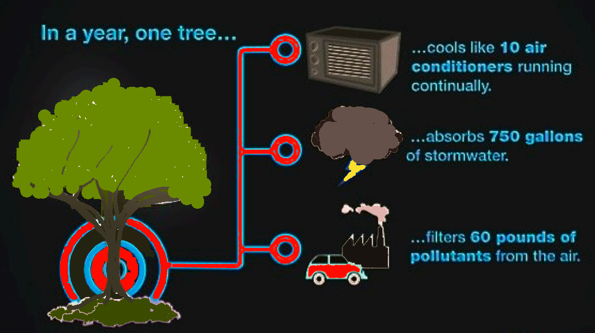

Tree Benefits by The Last 6000.
Seattle's Trees Are At Risk
Trees provide a wide range of environmental, social, and economic benefits, which can be compromised by urbanization. To mitigate the negative effects of urban development on trees, it is important to implement policies and practices that prioritize tree preservation, planting, and maintenance.
A collaborative effort between urban planners, developers, and arborists can help to create more livable and sustainable cities where trees thrive alongside urban development. By recognizing the value of trees in our urban landscapes, we can create a healthier and more resilient future for our communities.